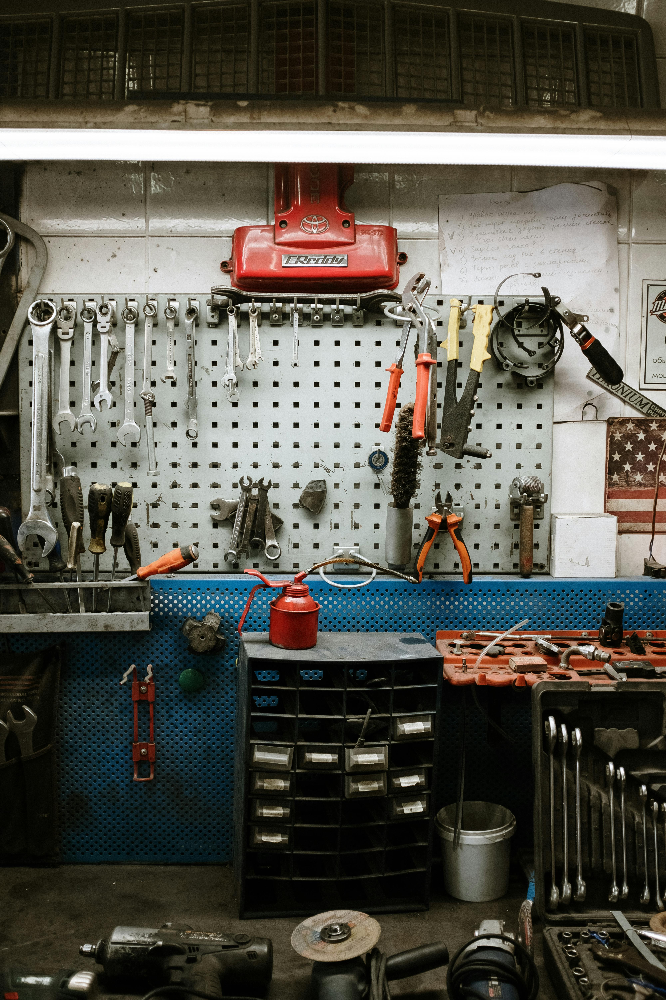
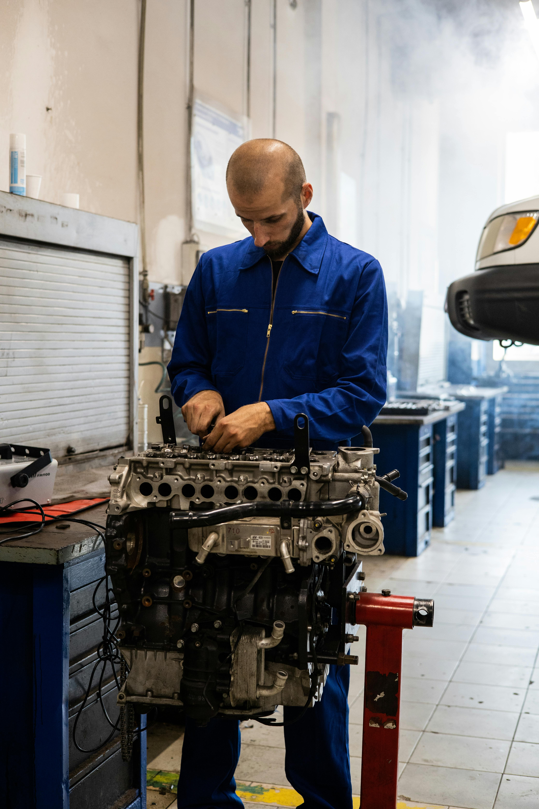

Kraków · Balicka 2
Pn–Pt · 08:00–18:00
Mechanika
bez
ściemy
Mechanika ogólna, uczciwa wycena, terminowo. Robimy to, co naprawdę trzeba zrobić — nie więcej, nie mniej. Twoje auto wraca do Ciebie sprawne i policzone do złotówki.

Co robimy
na Balickiej
Pełna mechanika osobowych aut benzynowych, dieslowskich i hybrydowych. Ceny startowe — finalna wycena zawsze przed rozpoczęciem pracy, na piśmie.
Przegląd okresowy
Wymiana oleju i filtrów, kontrola 30 punktów: zawieszenie, hamulce, płyny, oświetlenie.
Hamulce
Wymiana klocków, tarcz, przewodów, odpowietrzanie układu, regeneracja zacisków.
Zawieszenie
Amortyzatory, sprężyny, wahacze, łączniki stabilizatora, tuleje. Po naprawie — geometria.
Rozrząd
Wymiana paska lub łańcucha rozrządu wraz z pompą wody. Dla większości popularnych silników.
Diagnostyka komputerowa
Odczyt i kasowanie błędów, analiza parametrów na żywo, ocena przyczyny — nie tylko objawu.
Wymiana oleju
Olej silnikowy, skrzyni, mostu. Sprawdzenie poziomów, zerowanie inspekcji w komputerze.
Klimatyzacja
Nabicie, kontrola szczelności, dezynfekcja parownika, wymiana filtra kabinowego.
Diagnostyka przed kupnem
Pełne sprawdzenie auta przed zakupem — pisemny raport, zdjęcia, lista koniecznych napraw.
17 lat
na Balickiej 2

Po prostu
uczciwy
warsztat.
Complex powstał w 2008 roku jako mała, dwuosobowa firma rodzinna. Dzisiaj jesteśmy zespołem czterech mechaników, ale zasada się nie zmieniła: nie wymyślamy usterek, nie zmieniamy całych zespołów, kiedy wystarczy uszczelka, i zawsze pokazujemy wymienione części.
Pracujemy na sprzęcie diagnostycznym Bosch, mamy podnośniki czterosłupowe i ławę geometryczną. Specjalizujemy się w popularnych markach europejskich i japońskich — od miejskich „kanapek” po starsze diesle.
Cztery kroki,
zero niespodzianek
Bez „zostaw kluczyki, zadzwonimy”. Każdy etap jest pisemnie potwierdzony — wycena zanim zaczniemy, faktura kiedy kończymy.
-
01
Zgłoszenie
Telefon, formularz lub wizyta. Krótki wywiad — co się dzieje z autem, kiedy, w jakich warunkach. Umawiamy diagnozę na konkretną godzinę.
-
02
Diagnoza i wycena
Sprawdzamy auto na podnośniku i komputerem. W ciągu 24 h dostajesz pisemną wycenę z rozbiciem na robociznę i części, z dwoma wariantami jakości.
-
03
Naprawa
Zaczynamy dopiero po Twojej akceptacji. Jeżeli w trakcie znajdziemy coś jeszcze — dzwonimy i pytamy, zanim cokolwiek dotkniemy.
-
04
Odbiór
Pokazujemy wymienione części, omawiamy fakturę punkt po punkcie. Dwa lata gwarancji na robociznę — w razie czego wracasz do nas, nie do salonu.
Zanim zadzwonisz —
być może odpowiedź jest tutaj
/ 01 Jak długo czeka się na termin?
/ 02 Czy używacie zamienników, czy oryginalnych części?
/ 03 Co z gwarancją na naprawę?
/ 04 Czy mogę przyjechać po wycenę bez umawiania?
/ 05 Czy zostawicie mi auto zastępcze?
/ 06 Czy obsługujecie auta służbowe i flotowe?
Balicka 2,
Kraków
Najszybciej dogadamy się przez telefon — odbieramy w godzinach pracy. Maile i wiadomości z formularza odpisujemy w ciągu 24 godzin.
30-149 Kraków
Bronowice, 200 m od Ronda Ofiar Katynia
| Poniedziałek – Piątek | 08:00 – 18:00 |
| Sobota | 09:00 – 14:00 |
| Niedziela | nieczynne |
Balicka 2, Kraków